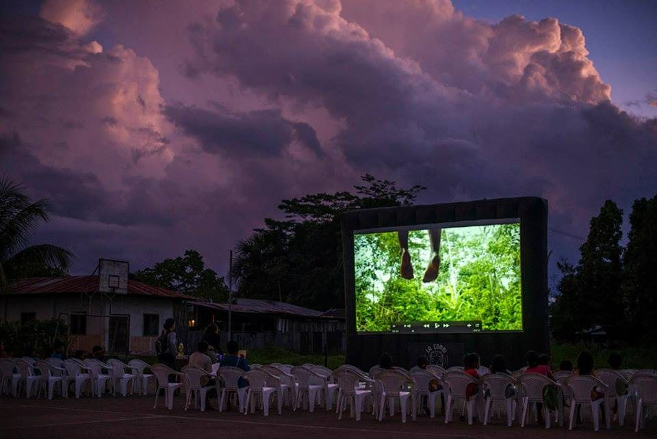

Participativo
Reconocemos a las comunidades como agentes activos de conocimiento y creación: ellas cuentan sus propias historias.
Desde 2013, La Combi · arte rodante explora las posibilidades del cine y el audiovisual como lenguajes capaces de cruzar fronteras, acercar culturas y conectar mundos.

Creemos en el poder de las historias para acercarnos a otras realidades. Por eso creamos espacios donde cada persona, colectivo o cultura pueda contar sus propias historias, compartir sus saberes y mostrar sus maneras de mirar y entender el mundo. Historias que viajan, que llegan a otros lugares y que podemos descubrir a través de las imágenes y las voces de quienes las protagonizan, sin intermediarios.
Desarrollamos proyectos culturales y educativos en distintos territorios y contextos, tanto rurales como urbanos. Creamos experiencias de participación y aprendizaje, compartimos metodologías y exploramos nuevas formas de expresión y comunicación a través del cine, el audiovisual y las nuevas tecnologías.
Nos interesan especialmente la diversidad cultural y lingüística, las lenguas indígenas, las memorias, las migraciones y la libertad de expresión. Nos mueve la curiosidad por conocer otros mundos, compartir lo que somos y descubrir todo aquello que nos conecta.
Porque cada cultura tiene historias que contar y miradas que compartir. Y el cine nos permite encontrarnos en ellas.

Reconocemos a las comunidades como agentes activos de conocimiento y creación: ellas cuentan sus propias historias.
Nos adaptamos a cada territorio, rural o urbano, y a cada grupo, con herramientas artísticas, educativas y digitales.
Fortalecemos capacidades locales y promovemos la cohesión social, la igualdad y el diálogo intercultural.
Espacios seguros de expresión, autoestima individual y colectiva, memorias y saberes recuperados y redes comunitarias que perduran.
Nuestro impacto se ve en las películas, pero sobre todo en los procesos. Una metodología alineada con los Objetivos de Desarrollo Sostenible, para impulsar transformaciones sociales duraderas desde la cultura y la participación ciudadana.
Los primeros años de La Combi en prensa, radio y medios digitales.